How to edit the documentation
The Qubes OS documentation is stored as reStructuredText (rST) files in the qubes-doc repository.
We use Sphinx for building and Read The Docs (RTD) for hosting. RTD is a continuous‑documentation deployment platform that can automatically detect changes in a GitHub repository and build the latest version of a documentation.
{kind=link}
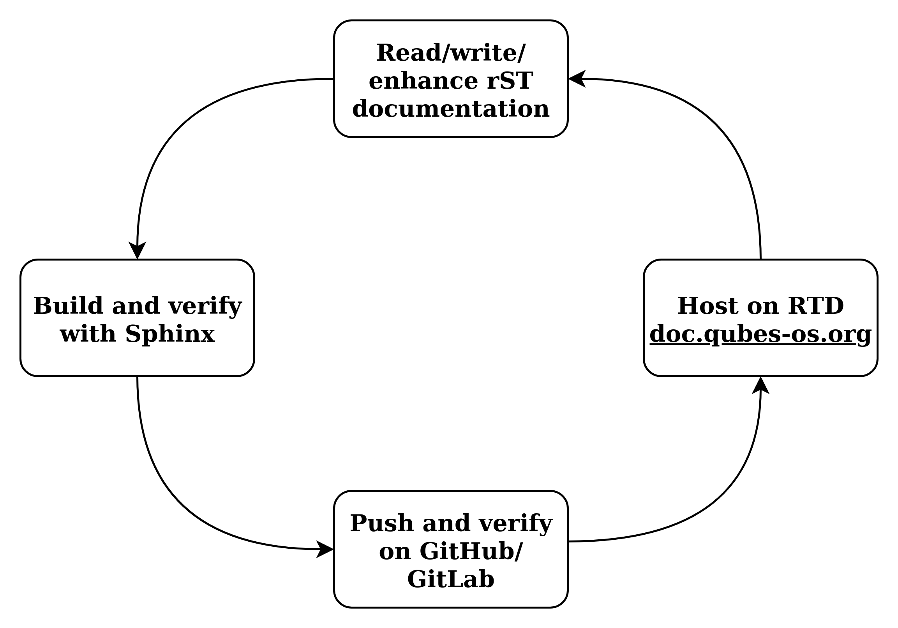
By cloning and regularly pulling from qubes-doc repository, users can maintain their own up-to-date offline copy of the Qubes documentation rather than relying solely on the web and either serve it locally or read the rST files directly. EPUB or PDF versions of Qubes OS documentation can also be downloaded from doc.qubes-os.org:
{kind=link}
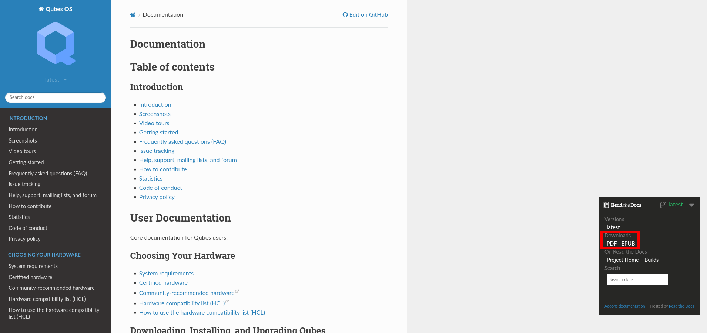
The documentation is a volunteer community effort. People like you are constantly working to make it better. If you notice something that can be fixed or improved, please follow the steps below to open a pull request!
How to submit a pull request
We keep all the rST documentation in qubes-doc, a dedicated Git repository hosted on GitHub. Thanks to GitHub’s easy web interface, you can edit the documentation even if you’re not familiar with Git or the command line! All you need is a free GitHub account.
A few notes before we get started:
Since Qubes is a security-oriented project, every documentation change will be reviewed before it’s accepted. This allows us to maintain quality control and protect our users.
To give your contribution a better chance of being accepted, please follow our reStructuredText documentation style guide.
We don’t want you to spend time and effort on a contribution that we can’t accept. If your contribution would take a lot of time, please file an issue for it first so that we can make sure we’re on the same page before significant works begins.
Alternatively, you may already have written content that doesn’t conform to these guidelines, but you’d be willing to modify it so that it does. In this case, you can still submit it by following the instructions below. Just make a note in your pull request (PR) that you’re aware of the changes that need to be made and that you’re just asking for the content to be reviewed before you spend time making those changes.
Finally, if you’ve written something that doesn’t belong in qubes-doc but that would be beneficial to the Qubes community, please consider adding it to the external documentation.
(Advanced users: If you’re already familiar with GitHub or wish to work from the command line, you can skip the rest of this section. All you need to do to contribute is to fork and clone the qubes-doc repo, make your changes, then submit a pull request. You can continue reading Viewing your pull request on RTD.)
Ok, let’s begin. Every documentation page has a Edit on GitHub link.
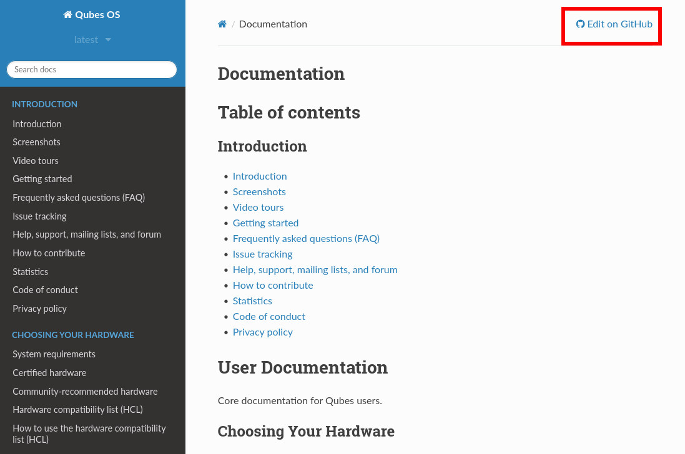
When you click on it, you’ll be taken to the source file — a reStructuredText (.rst) file — on GitHub.
On this page, there will be a button to edit the file (if you are already logged in).
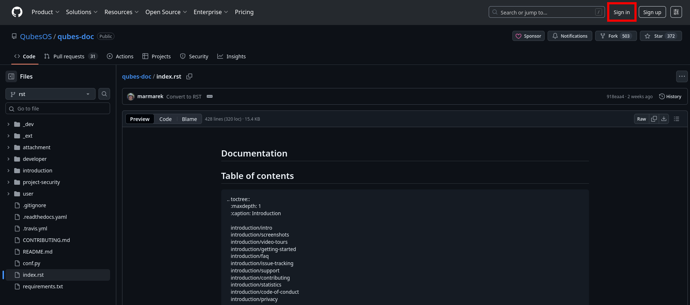
If you are not logged in you can click on Sign In and you’ll be prompted to sign in with your GitHub username and password. You can also create a free account from here.
If this is your first contribution to the documentation, you need to fork the repository (make your own copy).
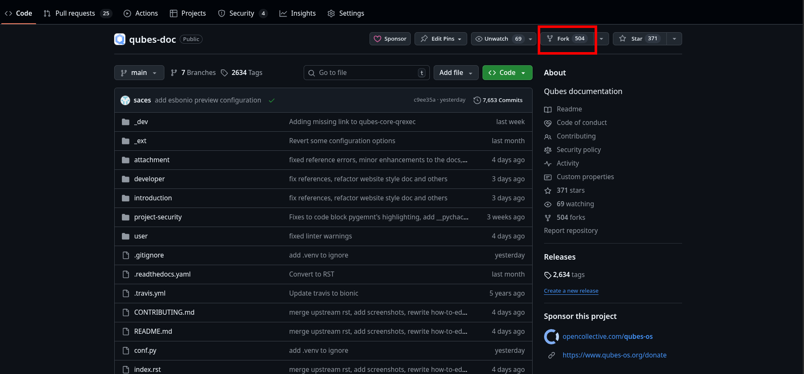
It’s easy — just click the green Create fork button on the next page. This step is only needed the first time you make a contribution.
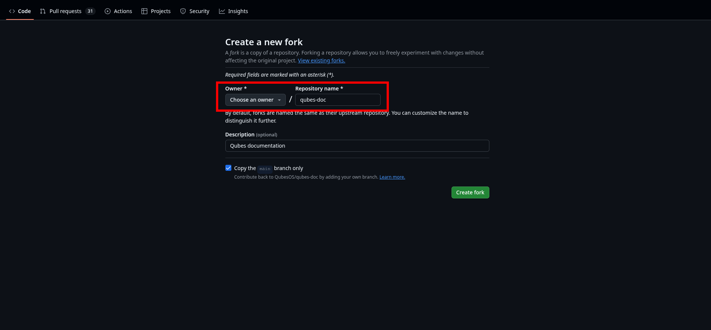
Now you can make your modifications.
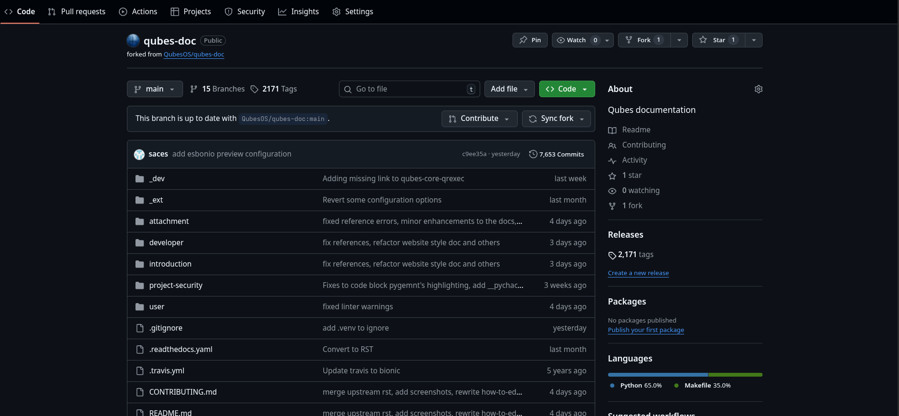
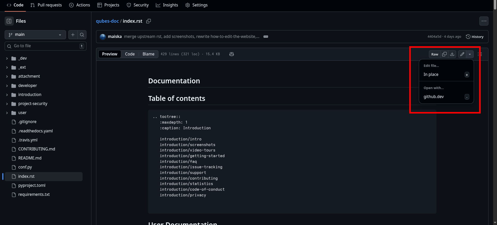
If you want to add images, read TL;DR: How to add images and refer to Building the rST documentation locally if you want to locally verify that everything looks correct before submitting any changes.
Once you’re finished, describe your changes at the bottom and click Commit changes.
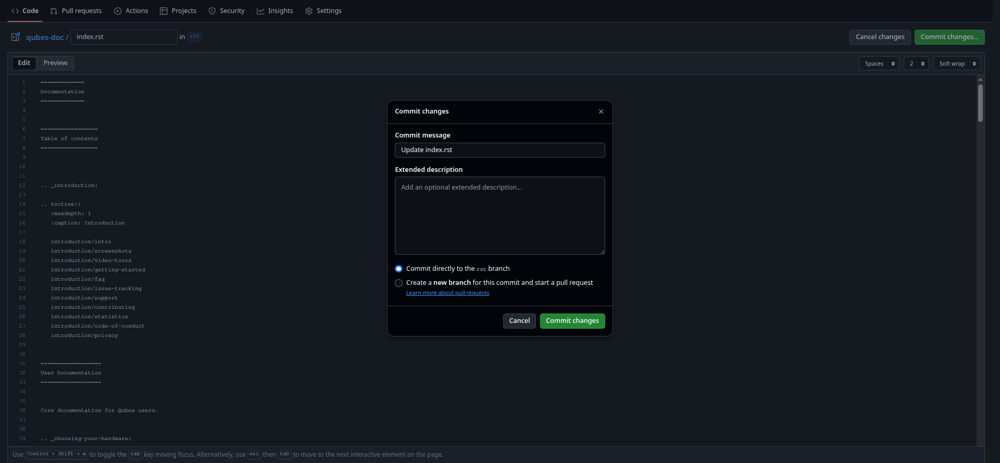
After that, you’ll see exactly what modifications you’ve made. At this stage, those changes are still in your own copy (fork) of the documentation. If everything looks good, send those changes to us by pressing the Create pull request button.
You will be able to adjust the pull request message and title there. In most cases, the defaults are ok, so you can just confirm by pressing the Create pull request button again. However, if you’re not ready for your PR to be reviewed or merged yet, please make a draft PR instead.
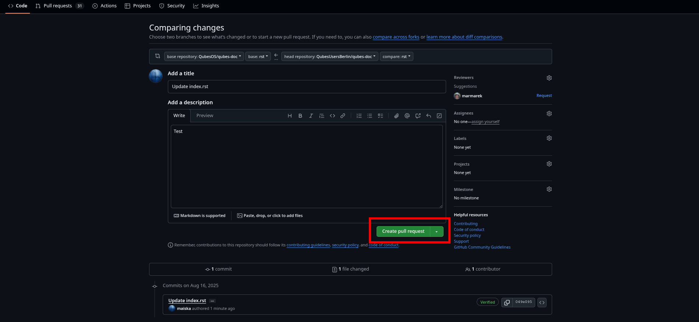
If any of your changes should be reflected in the documentation index (a.k.a. table of contents) — for example, if you’re adding a new page, changing the title of an existing page, or removing a page — please see TL;DR: How to edit the documentation index.
That’s all! We will review your changes. If everything looks good, we’ll pull them into the official documentation. Otherwise, we may have some questions for you, which we’ll post in a comment on your pull request. (GitHub will automatically notify you if we do.) If, for some reason, we can’t accept your pull request, we’ll post a comment explaining why we can’t.
Viewing your pull request on RTD
Every time you push a commit to your pull request, a build on RTD will be triggered. To view your PR you can go to Qubes OS builds on RTD, find the last build of your PR and click on it:
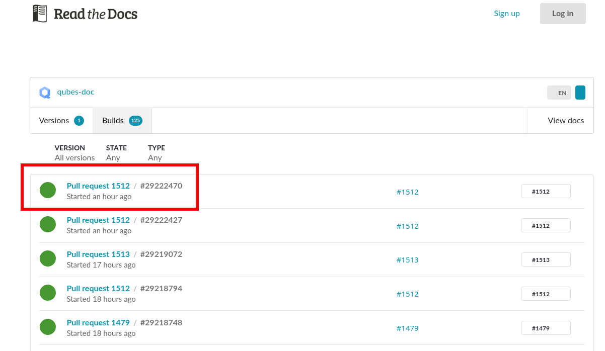
There you can view the rendered docs or inspect the logs for errors:
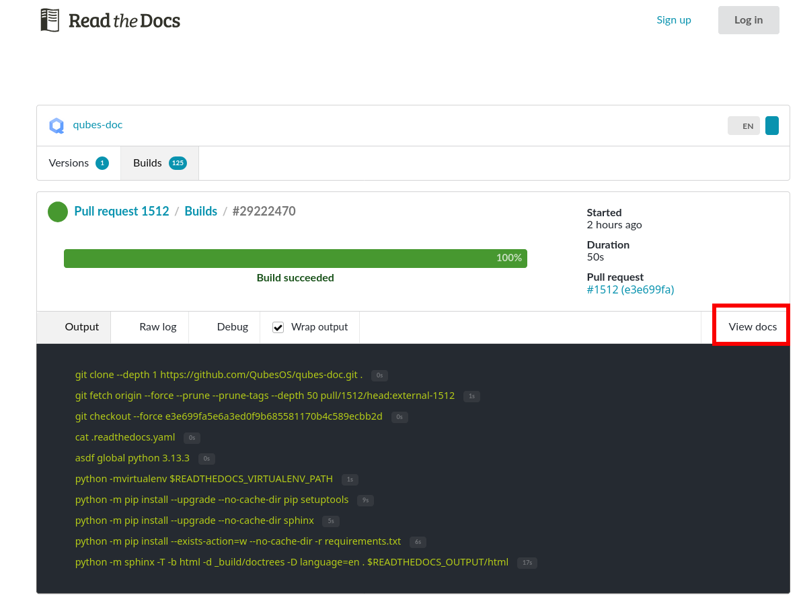
You can also just head straight to the following url: https://qubes-doc--<PR-NUMBER>.org.readthedocs.build/en/<PR-NUMBER>/.
Tips & Tricks
Pull upstream changes into your fork regularly. Diverging too far from main can be cumbersome to update at a later stage.
To pull in upstream changes:
$ git remote add upstream https://github.com/QubesOS/qubes-doc.git $ git fetch upstream
Check the log and the current changes, before merging:
$ git log upstream/main
Then merge the changes that you fetched:
$ git merge upstream/main
Keep your pull requests limited to a single issue, pull requests should be as atomic as possible.
TL;DR: How to edit the documentation index
For a more comprehensive guide to the rST syntax and pitfalls please refer to the reStructuredText documentation style guide.
The source file for the documentation index (a.k.a. table of contents) is index.rst.
index.rst contains information about the hierarchy between the files in the documentation and/or
the connection between them. toctree
is the rST directive which defines the table of contents.
If you want to add a newly created documentation file, do so as follows:
.. toctree:
/path/to/old_doc_file_name
/path/to/new_doc_file_name
Editing this file will change what appears on the documentation index.
Please always be mindful that rST syntax is sensitive to indentation (3 spaces)!
TL;DR: How to add images
For a more comprehensive guide to the rST syntax and pitfalls please refer to the reStructuredText documentation style guide.
Images reside inside the qubes-doc repository in the directory attachment/doc.
To add an image to a page, use the following syntax:
.. figure:: /attachment/doc/r4.0-snapshot12.png
:alt: Qubes desktop screenshot depicting <description>
If you want to add a caption to the image, you may do so using the optional caption of the figure directive.
Another way without a caption is to use the image directive.
Then, add your image(s) in a the attachment/doc folder in the qubes-doc
repository using the same path and filename.
This is the only permitted way to include images. Do not link to images on other websites.
TL;DR: Cross-referencing
You can link to any part of the documentation using cross-references.
When referencing to a page use the :doc: role as in:
See :doc:`/introduction/contributing` to do [...]
Use the path to the file starting from the root of qubes-doc repository, with a leading slash (/) and without the .rst file ending.
When referencing to a section in a page use the :ref: role as in:
See :ref:`introduction/contributing:Contributing Code` for [...]
The first part (before the colon) is the path of the file as with the :doc: role but without the leading slash (/). The second part is the content of the header.
When referencing some kind of code use the corresponding role, eventually prefixed by the sub-project, as in:
See :py:class:`core-admin:qubes.vm.dispvm.DispVM`
提示
For a more comprehensive guide to the rST syntax and pitfalls please refer to the reStructuredText documentation style guide.
Qubes OS rST configuration
qubes-doc directory contains a build configuration file named conf.py, used by Sphinx
to define input and output behaviour.
It contains settings and extensions that define how the documentation will be generated.
You can find it here.
You can also find a readthedocs.yml file
which tells RTD how to build the documentation. It defines the build environment, Python version, required dependencies,
and which Sphinx configuration to run. Thus RTD automatically generates and hosts the docs.
Extensions
We use several Sphinx extensions
as defined in conf.py, as well a simple custom one to embed YouTube videos,
which can be found here.
Building the rST documentation locally
In order to build the Qubes OS rST documentation locally clone the qubes-doc repository (or your forked one if you want to submit a pull request).
It is recommended to use a virtual environment, f.ex. venv, poetry or uv. In the following section there is a sample setup to prepare local environments for building Qubes OS rST documentation.
Using venv
Creating a Python environment with venv
Install needed packages and clone the repository
$ sudo apt install git python3-dev python3.11-venv $ git clone https://github.com/QubesOS/qubes-doc.git $ cd qubes-doc
Create a virtual environment
Create and enter the virtual environment.
$ python3 -m venv .venv $ . .venv/bin/activate (.venv) $ echo "$VIRTUAL_ENV"备注
You will have to activate the environment every time a new shell is opened.
Install Sphinx and Required Extensions
Install Sphinx and the necessary extensions (sphinx-autobuild, sphinx-lint).
(.venv) $ pip install -r requirements.txt sphinx-lint sphinx-autobuild
Linting the documentation from venv
Run Linting
The sphinx-lint extension checks for common issues like missing references, invalid directives, or formatting errors. Run the linting step using the sphinx-lint command.
(.venv) $ sphinx-lint -i .venv .
Run Link Checker
The sphinx-linkcheck extension verifies the validity of all external and internal links.
The results will be written to the
_build/linkcheckdirectory with a detailed report inoutput.txtoroutput.jsonfiles of all checked links and their status (e.g., OK, broken, timeout).(.venv) $ sphinx-build -b linkcheck . _build/linkcheck
Building the documentation from venv
Build Documentation
Use sphinx-build with the -v (verbose) flag to generate detailed output during the build process. The build command specifies the source directory (current directory
.,qubes-docin this case), the output directory (_build/html), and the builder (html).(.venv) $ sphinx-build -v -b html . _build/html
The build command specifies the source directory (
qubes-doc), the output directory (_build/html), and the builder (html). The build command will process all source files in thequbes-docdirectory, generate HTML output in the_build/htmldirectory, and print detailed build information to the console. Pay attention to errors and warning in the output! Please do not introduce any new warnings and fix all errors.Use sphinx-autobuild for development
For an active development workflow, you can use sphinx-autobuild to automatically rebuild the documentation and refresh browser whenever a file is saved. sphinx-autobuild starts a web server at http://127.0.0.1:8000, automatically rebuilds the documentation and reloads the browser tab when changes are detected in the
qubes-docdirectory.(.venv) $ sphinx-autobuild . _build/html
Using poetry
You can also use uv if you wish.
Creating a Python environment with poetry
Install poetry and git and clone the repository.
$ sudo apt install git $ git clone https://github.com/QubesOS/qubes-doc.git $ cd qubes-doc
Install Sphinx and Required Extensions
Install Poetry, Sphinx and the necessary extensions (sphinx-autobuild, sphinx-lint). A
pyproject.tomlfile is provided.$ curl -sSL https://install.python-poetry.org | python3 - $ poetry config virtualenvs.in-project true # optional $ poetry install提示
If you would like to avoid prefixing commands with poetry run, you can source the virtual environment with
eval $(poetry env activate)on every new shell session. Note that when enablingvirtualenvs.in-project, you will find the virtual environment in the project root directory undre.venv, same place thevenvinstructions uses.
Linting the documentation with peotry
Run Linting
The sphinx-lint extension checks for common issues like missing references, invalid directives, or formatting errors. Run the linting step using the sphinx-lint command.
$ poetry run sphinx-lint -i .venv .
Run Link Checker
The sphinx-linkcheck extension verifies the validity of all external and internal links.
The results will be written to the
_build/linkcheckdirectory with a detailed report inoutput.txtoroutput.jsonfiles of all checked links and their status (e.g., OK, broken, timeout).$ poetry run sphinx-build -b linkcheck . _build/linkcheck
Building the documentation with poetry
Build Documentation
Use sphinx-build with the -v (verbose) flag to generate detailed output during the build process. The build command specifies the source directory (current directory
.,qubes-docin this case), the output directory (_build/html), and the builder (html).$ poetry run sphinx-build -v -b html . _build/html
The build command specifies the source directory (
qubes-doc), the output directory (_build/html), and the builder (html). The build command will process all source files in thequbes-docdirectory, generate HTML output in the_build/htmldirectory, and print detailed build information to the console. Pay attention to errors and warning in the output! Please do not introduce any new warnings and fix all errors.Use sphinx-autobuild for development
For an active development workflow, you can use sphinx-autobuild to automatically rebuild the documentation and refresh browser whenever a file is saved. sphinx-autobuild starts a web server at http://127.0.0.1:8000, automatically rebuilds the documentation and reloads the browser tab when changes are detected in the
qubes-docdirectory.$ poetry run sphinx-autobuild . _build/html
Editor
An editor you can use is ReText but any editor would do.
$ sudo apt install libxcb-cursor0
$ python3 -m venv .venv
$ . .venv/bin/activate
$ pip3 install ReText
Security
Also see: FAQ: Why is the documentation hosted on ReadTheDocs as opposed to the website?
All pull requests (PRs) against qubes-doc must pass review prior to be merged, except in the case of external documentation (see #4693). This process is designed to ensure that contributed text is accurate and non-malicious. This process is a best effort that should provide a reasonable degree of assurance, but it is not foolproof. For example, all text characters are checked for ANSI escape sequences. However, binaries, such as images, are simply checked to ensure they appear or function the way they should when the website is rendered. They are not further analyzed in an attempt to determine whether they are malicious.
Once a pull request passes review, the reviewer should add a signed
comment stating, “Passed review as of <LATEST_COMMIT> (or similar).
The documentation maintainer then verifies that the pull request is
mechanically sound (no merge conflicts, broken links, ANSI escapes,
etc.). If so, the documentation maintainer then merges the pull request,
adds a PGP-signed tag to the latest commit (usually the merge commit),
then pushes to the remote. In cases in which another reviewer is not
required, the documentation maintainer may review the pull request (in
which case no signed comment is necessary, since it would be redundant
with the signed tag).
Questions, problems, and improvements
If you have a question about something you read in the documentation or about how to edit the documentation, please post it on the forum or send it to the appropriate mailing list. If you see that something in the documentation should be fixed or improved, please contribute the change yourself. To report an issue with the documentation, please follow our standard issue reporting guidelines. (If you report an issue with the documentation, you will likely be asked to submit a pull request for it, unless there is a clear indication in your report that you are not willing or able to do so.)